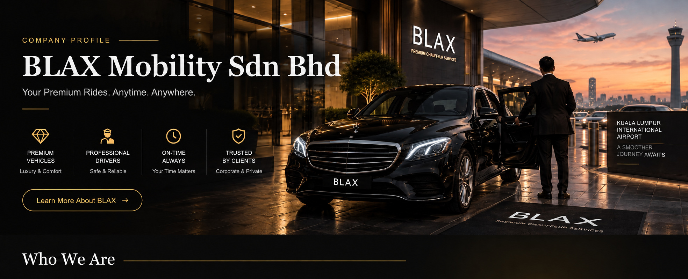

Premium Vehicles
Travel in a comfortable, presentable vehicle.

WHO WE ARE
BLAX Mobility Sdn Bhd provides premium pre-booked chauffeur transportation for private customers, business travellers, corporate clients and airport passengers across Kuala Lumpur and Klang Valley. Our service is built around punctuality, professional communication, comfortable vehicles and dependable coordination from booking until arrival.
Travel in a comfortable, presentable vehicle.
Courteous service for private and business journeys.
Pickup coordinated around your schedule.
Clear communication from booking until arrival.
OUR SERVICES
Pre-booked travel to and from KLIA and KLIA2, with pickup details and flight information coordinated in advance.
Executive movements, visiting guests, meetings and business events arranged with a professional image.
Dedicated drivers for family holidays, appointments, sightseeing and personal journeys.
Mercedes-Benz GLC, Toyota Camry, Toyota Alphard and Hyundai Staria options to suit your journey.
HOW WE WORK
We confirm journey requirements, coordinate the assigned driver and keep communication clear. For confirmed airport journeys, a private WhatsApp group can connect the passenger, driver and BLAX hotline.
Share your pickup, destination, date, time, passenger count and any luggage or vehicle requirements.
BLAX confirms the journey and communicates the details to the assigned chauffeur.
Expect a presentable vehicle, an early pickup and a safe, smooth and steady journey.